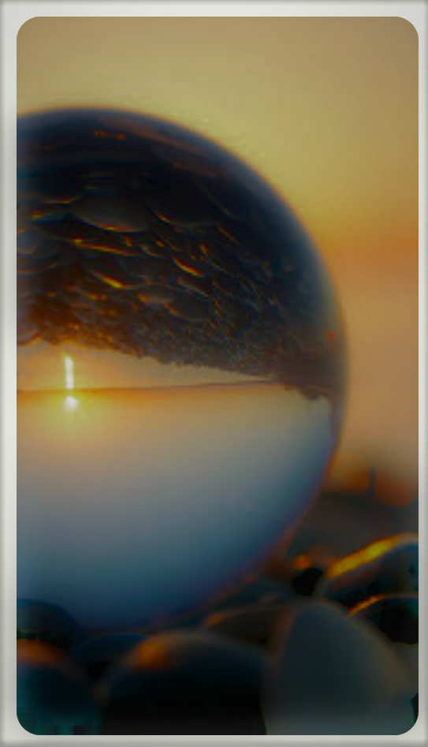

Page 6
Next
A New Chance.
Not every organism, some species are thought to be superior and because of this, they always realise
their limits by her. Just because it’s a duty of a mother who teaches her child to always remember his
capacities and some responsibilities towards other organism.
Sometimes, mother nature gets angry just because of human deed, for forgetting the connection among
other animals. Sometimes, human cut trees or affect marine or riverine or aerial life by polluting seas,
rivers or lakes or atmosphere in the name of development of human abilities and technology.
As a consequence, she took action against this behaviour as the image of tsunami, earthquakes, volcanic
activity or some pandemic, all these are other forms of her anger.

Just because of, she is a mother, her mothering also gives a solution to fight back against this and with a
new chance to learn form mistake, we can socialise with the environment, with other features of
Nature, by respecting every presents of her.
Contents.
Previous
Name : Tejashvi Anand
Class : 10
Session : 2022-23
ID : 9559